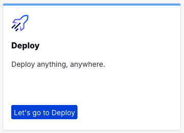
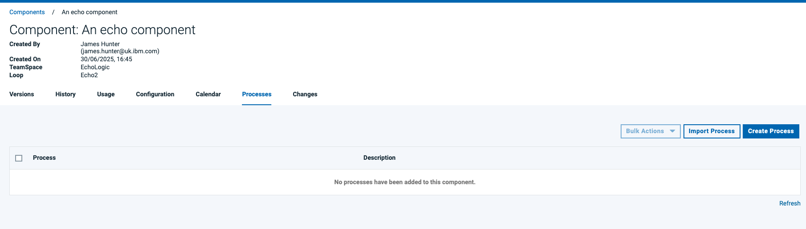
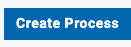
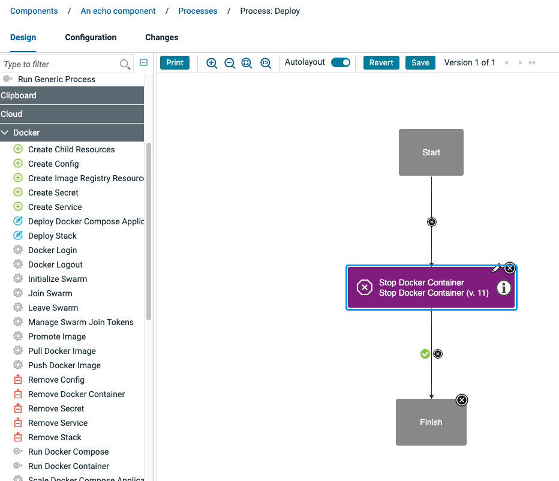
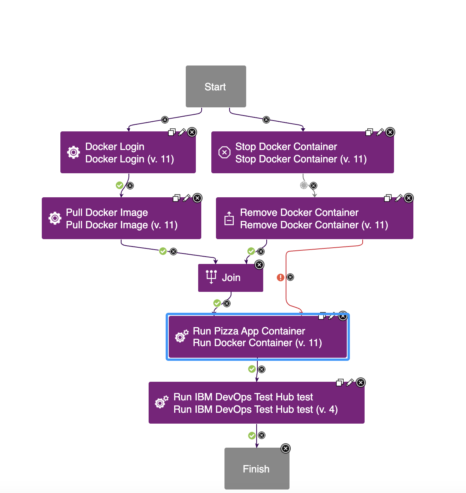

Deploy Lab
TODO: Flow needs complete rewrite and new screenshots TODO: update flow, app references from PIZZA to EchoLogic and screenshots
Overview
This lab provides a practical, hands-on experience in deploying an application to a target server.
Explore the comprehensive dashboard provided by DevOps Deploy, which displays key information about deployment successes and failures
How to switch to Deploy from Home Page
You can switch to Deploy by either pressing "Let's go to Deploy" button on its tile:

Or you can always switch using the central app switcher on the top left of your screen:

Deploy Landing Page

Applications
TODO: talk about applications
Components
TODO: talk about components
Processes
TODO: talk about processes
Types of Processes
Generic Processes
TODO: talk about generic processes and for what they are good for
Application Processes
TODO: talk about app processes and what is the diff to other
Component Processes
TODO: talk about component processes and what is it good fore

How to create a Process
In the Processlist click on the Create Process Button: 
Process Designer
It will show you the process designer:

Process Designer Sidebar
TODO: talk about sidebar

Drag Drop a step onto the canvas.

Final Process Diagram
